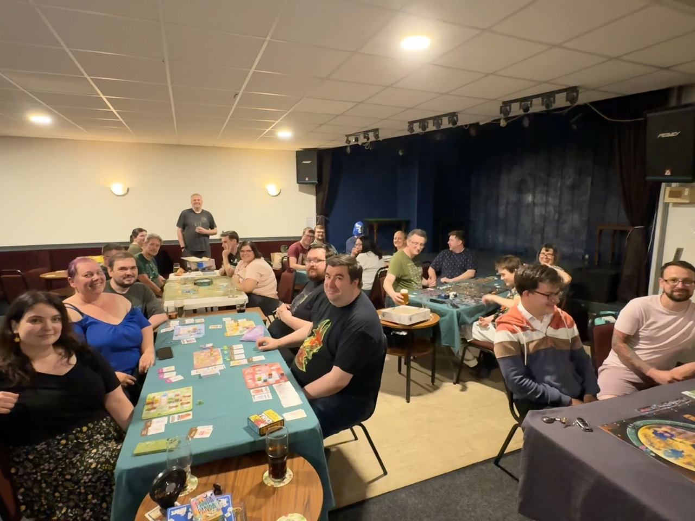
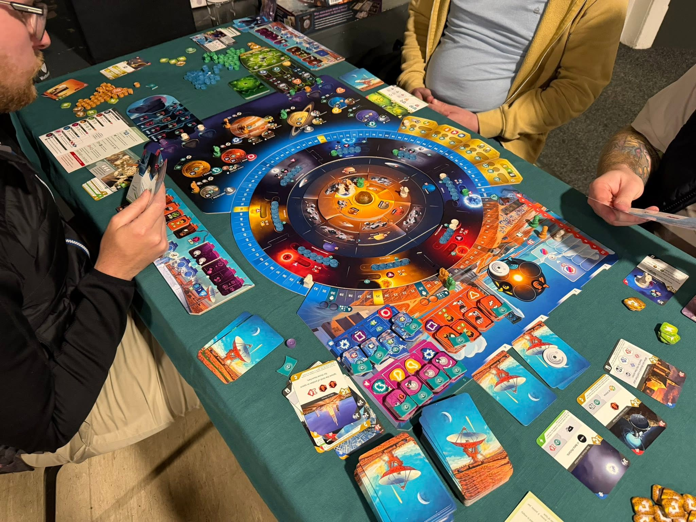
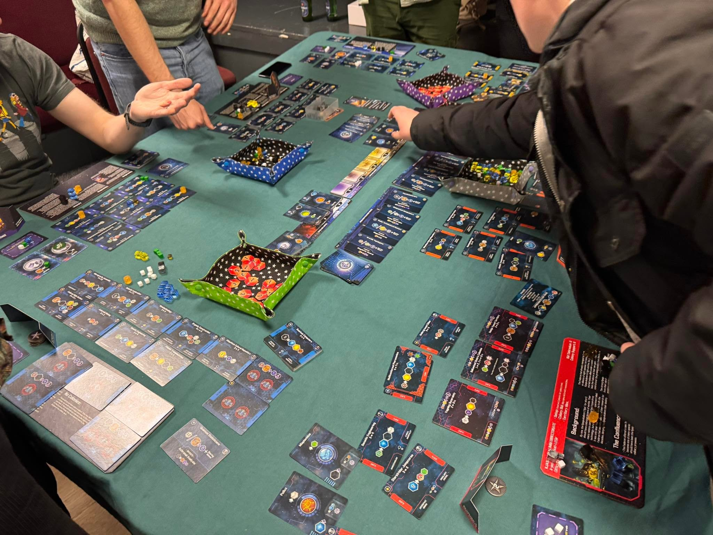
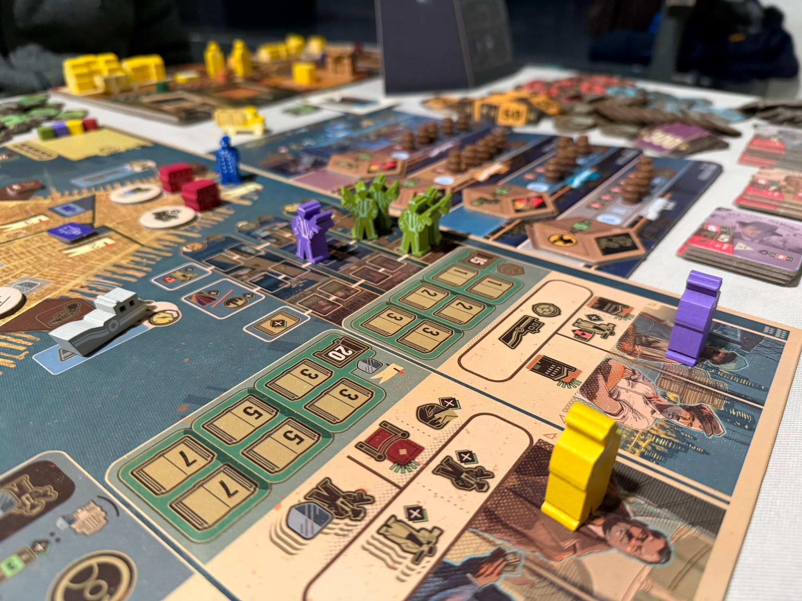
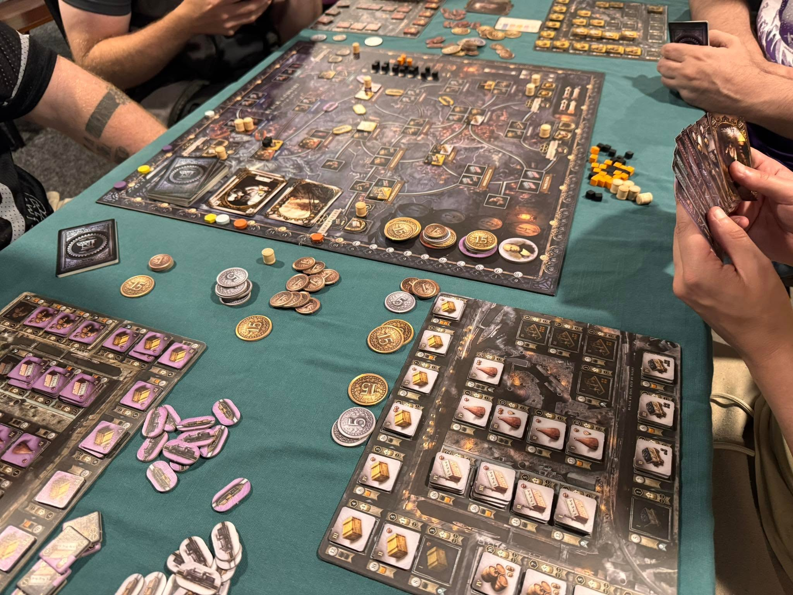
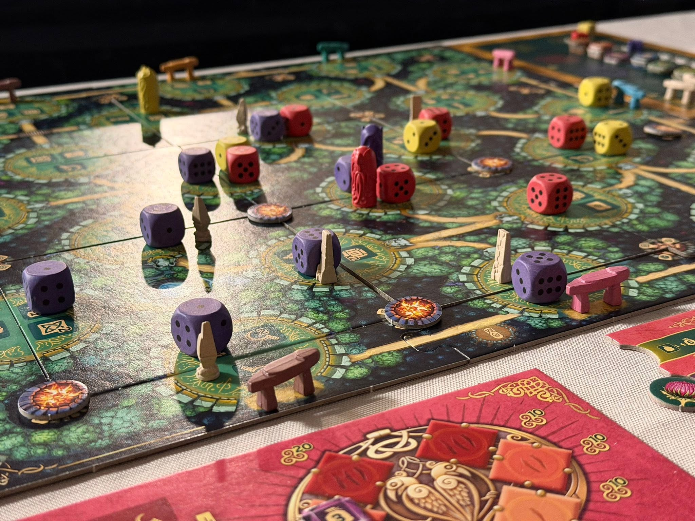
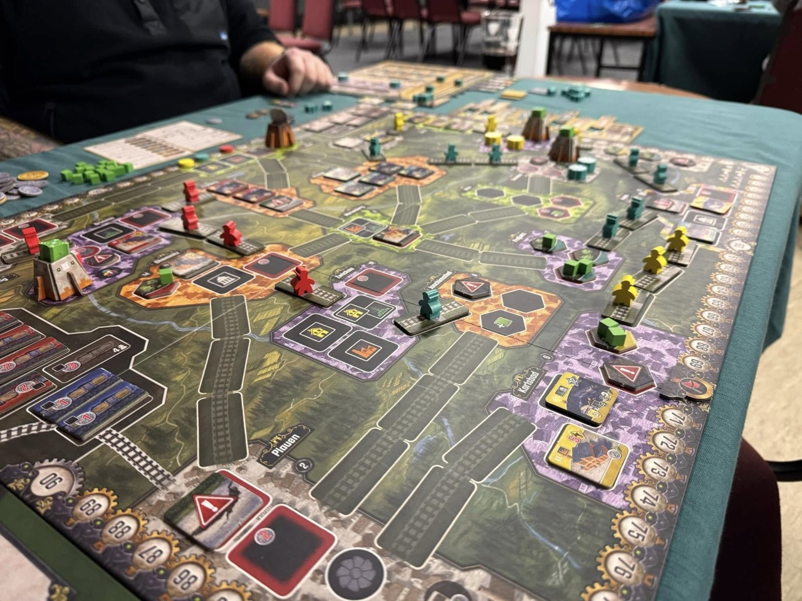
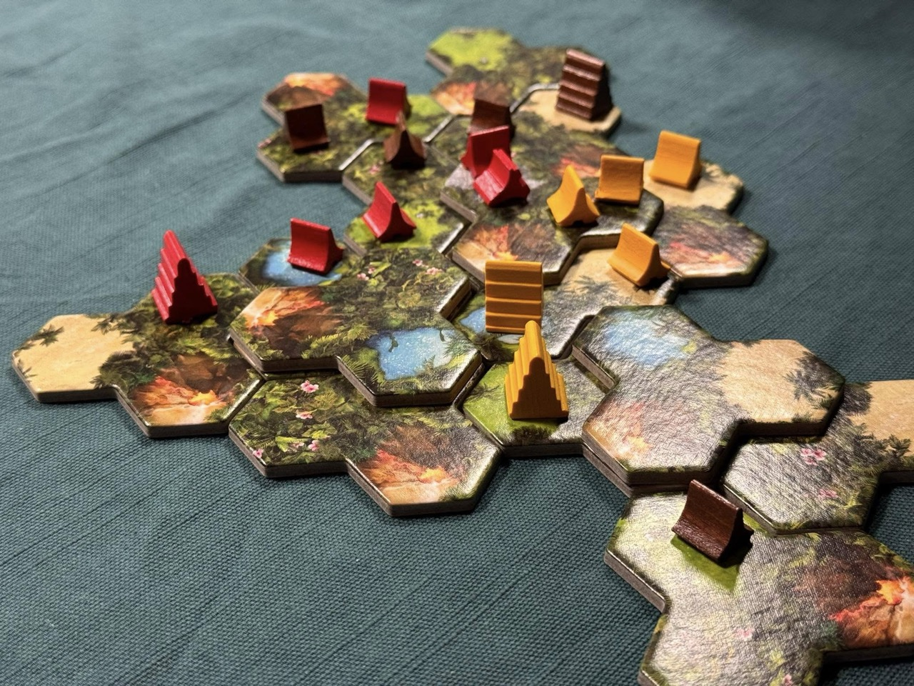
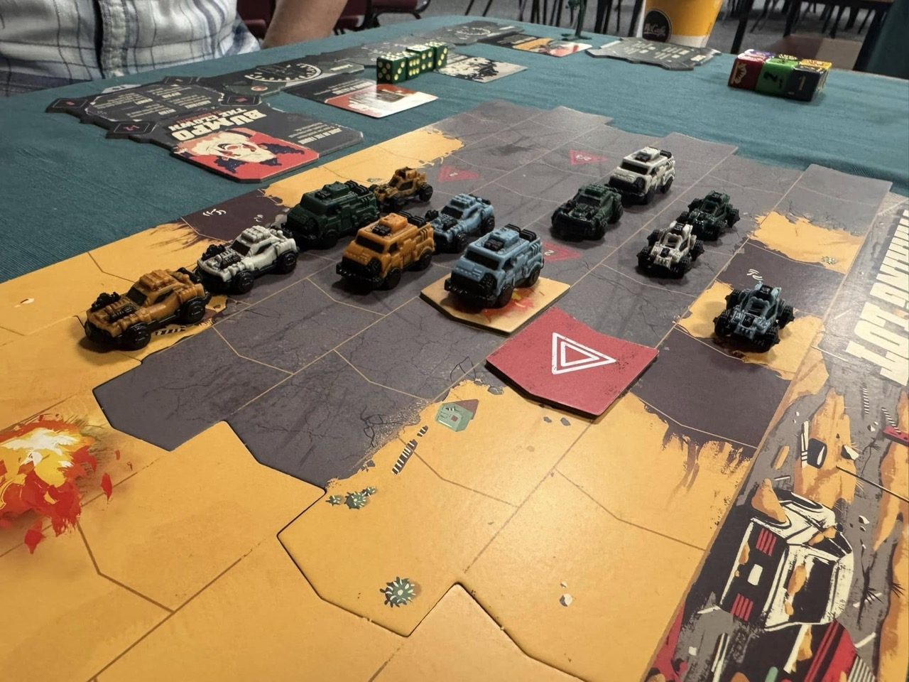

Est. 2021
Leeds' friendliest board game club
We're a group of board game hobbyists who meet every Tuesday in Morley, Leeds, from 7pm to 11pm. It's free to come along, and newcomers are always welcome.
Next game night: , 7pm




About
A friendly community of tabletop enthusiasts
South Leeds Board Gamers are a friendly community of board and tabletop game enthusiasts, playing everything from euro to war games and anything in-between. We welcome players from all backgrounds who are looking to connect and make lasting friendships with other like-minded hobbyists.
If you're familiar with the likes of Catan, Ticket to Ride or indeed heavier games you'll fit right in. Our members all have collections of their own, so you can either just turn up and play or bring your own games. The choice is yours!

First time?
Just turn up and we'll do the rest
Members don't need to bring anything. Plenty of our members bring games and are happy to teach. As long as you have some enthusiasm and interest, that's all that's necessary.
Just turn up on a Tuesday evening and we'll help you find a game to sit down with. There's no need to pre-organise anything. We play a wide variety of games of different weights to suit a range of players in a friendly atmosphere.

Gallery
Game nights in action



Get involved
Free to attend, every single week
Our weekly game night is free to attend and runs from 7pm to 11pm, every Tuesday at Bruntcliffe Working Men's Club in Morley. The venue has both parking and a bar serving drinks, plus a takeaway round the corner if you get hungry.
We also run regular all-day game-day events, pulling in gamers from across the region. With upwards of 100+ attendees, our game day events are not to be missed.
Find us
Bruntcliffe Working Men's Club
When:
Every Tuesday, 7pm – 11pm
Address:
Bruntcliffe Working Men's Club
Bruntcliffe Road
Morley
Leeds
LS27
0LQ
FAQ
Frequently asked questions
Do I need to book or sign up in advance?
No. There's no need to pre-organise anything, just turn up on a Tuesday evening and we'll help you find a game to sit down with. We'd recommend arriving by 7:15pm, as after that you may have to wait for a game to finish before you can join in.
How much does it cost?
Nothing! Our weekly game night is free to attend and there are no membership fees.
Do I need to bring my own games?
Not at all. Plenty of our members bring games from their own collections, so you can just turn up and play. You're always welcome to bring your own games too, the choice is yours!
I'm new to board games, will someone teach me?
Yes! Our members are happy to teach. We play a wide variety of games of different weights to suit a range of players, so as long as you have some enthusiasm and interest, that's all that's necessary.
What kind of games do you play?
Everything from euro to war games and anything in-between. If you're familiar with the likes of Catan and Ticket to Ride, or indeed heavier games, you'll fit right in.
Is there an age limit?
Our game nights are for adults aged 18 and over, as we like to keep it a relaxed, adult environment.
Is there parking, food and drink?
Yes, the venue has parking and a bar serving drinks, plus there's a takeaway round the corner if you get hungry.